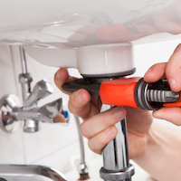
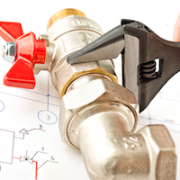

Instalación de Tuberías:
Los fontaneros son responsables de la instalación de tuberías de agua fría y caliente,
así como de sistemas de desagüe.
Esto incluye la selección de materiales adecuados y la planificación de la distribución de las tuberías en el espacio.
Reparación de Fugas:
Las fugas de agua pueden causar daños significativos en una propiedad. Los fontaneros están capacitados para localizar y reparar fugas en tuberías,
grifos y otros sistemas de fontanería, asegurando que el agua fluya correctamente y evitando pérdidas innecesarias.

Desatascos:
Con el tiempo, los desagües pueden obstruirse debido a la acumulación de residuos. Los servicios de desatasco incluyen la limpieza
de tuberías y desagües, utilizando herramientas especializadas para eliminar bloqueos y restaurar el flujo normal del agua.
Instalación de Sanitarios:
Esto incluye la instalación de inodoros, lavabos, duchas y bañeras. Los fontaneros se aseguran de que todos los
sanitarios estén correctamente conectados al sistema de fontanería y funcionen de manera eficiente.

Mantenimiento Preventivo:
Muchos fontaneros ofrecen servicios de mantenimiento regular para prevenir problemas futuros. Esto puede incluir la revisión de
sistemas de fontanería, limpieza de desagües y chequeo de la presión del agua.
Calefacción y Agua Caliente:
La instalación y reparación de sistemas de calefacción, como calderas y calentadores de agua, también forman parte de los
servicios de fontanería. Los fontaneros pueden ayudar a elegir el sistema adecuado y garantizar su correcto funcionamiento.
Asesoramiento y Consultoría:
Los fontaneros experimentados pueden ofrecer asesoramiento sobre las mejores prácticas para la selección de productos y sistemas
eficientes en términos de consumo de agua y energía.